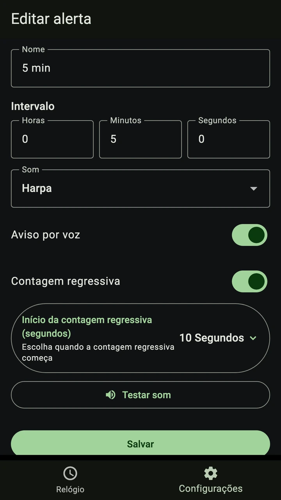
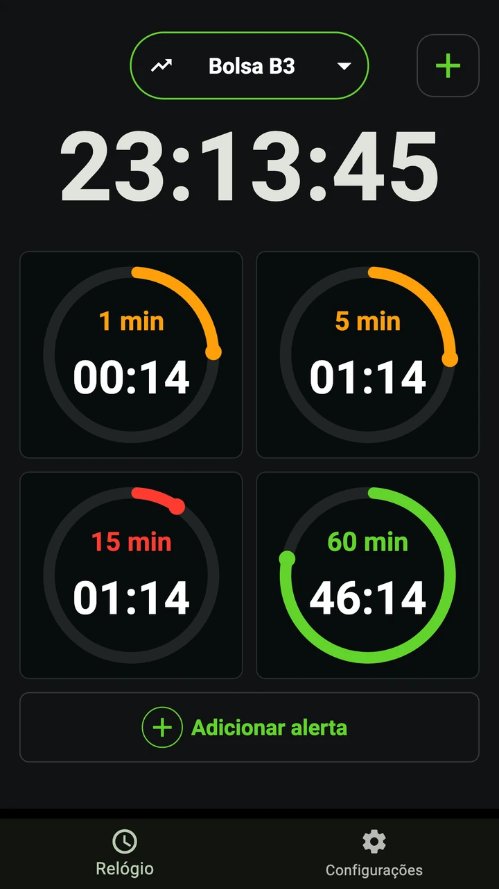
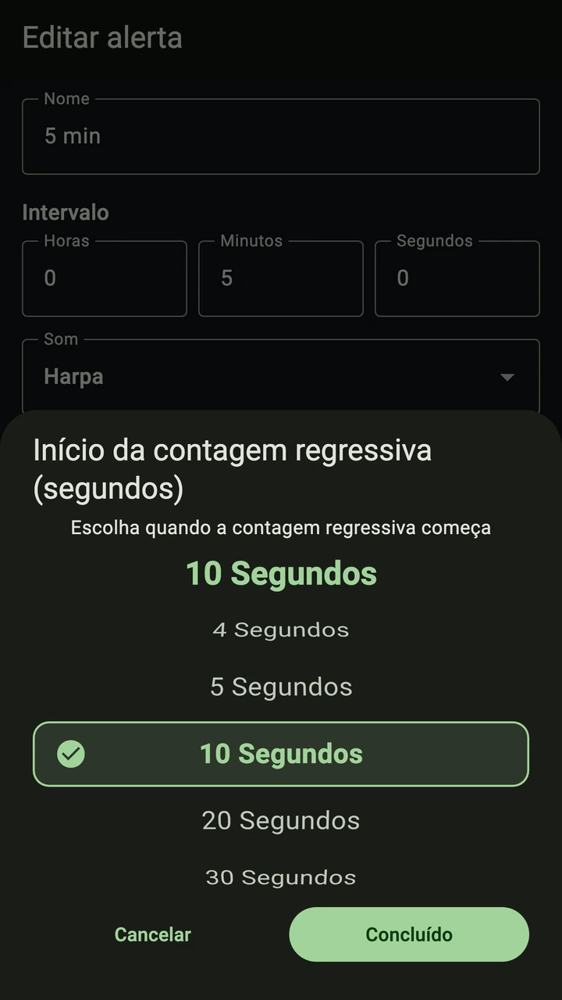
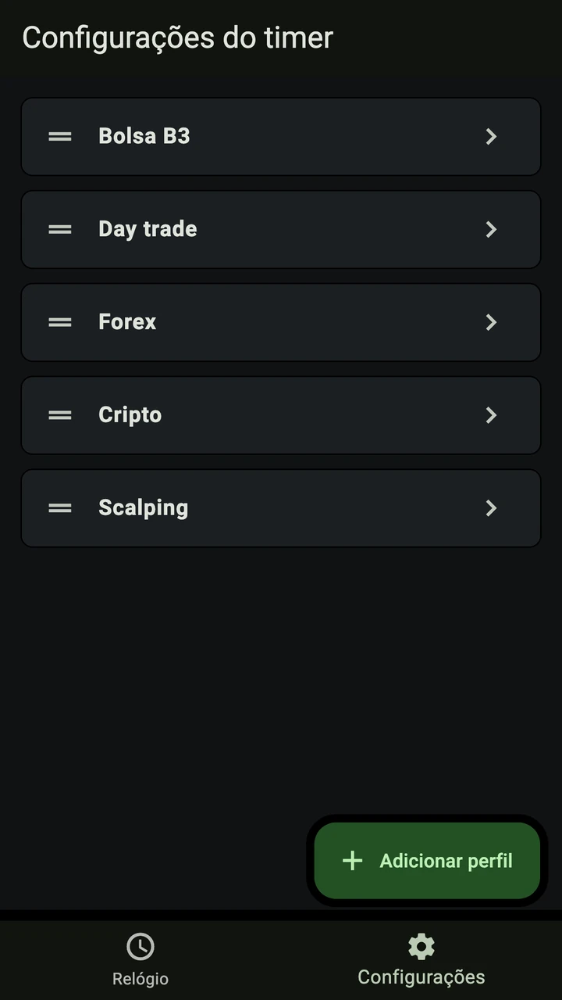

Vários intervalos, juntos
Use 1, 5, 15 minutos ou crie seu intervalo em horas, minutos e segundos.

Seu timer para candles de 1, 5, 15 minutos ou qualquer intervalo. Ouça a contagem regressiva em português sem consultar o relógio a todo instante.


Grátis para baixar. A remoção dos anúncios ao abrir o app é uma compra única opcional.

Use 1, 5, 15 minutos ou crie seu intervalo em horas, minutos e segundos.

Escolha quando a contagem começa e ouça os segundos em português, mantendo o foco no gráfico.

Salve seus alertas em perfis para ações, forex e cripto. Troque sem ajustar tudo de novo.

Use um perfil existente ou crie um para o mercado que acompanha.
Escolha o tempo, o som e quando começa a contagem por voz.
Acompanhe o gráfico na sua plataforma e ouça os alertas do Trader Timer.
Configure um intervalo de 5 minutos e a contagem para os últimos 10 segundos. Deixe o Trader Timer aberto ao lado do gráfico e ouça a contagem na hora configurada.
O essencial, antes de começar.
Sim. O app oferece interface e contagem regressiva por voz em português do Brasil. Você escolhe com quantos segundos de antecedência a contagem começa.
Sim. Configure alertas de 1, 5, 15 minutos ou escolha seus próprios intervalos para acompanhar o gráfico no day trade. O Trader Timer mostra a contagem do tempo configurado; não se conecta à sua corretora nem recebe cotações.
Sim. O download é gratuito e o app pode exibir anúncios na abertura. Há uma compra única opcional para remover esses anúncios. O preço é informado na loja.
No Android, ative a execução em segundo plano para ouvir alertas com outros apps ou com a tela apagada; a economia de bateria pode atrasá-los. No iPhone, mantenha o app aberto durante o uso dos alertas.
Não. O Trader Timer acompanha intervalos de tempo e não analisa preços nem executa operações.
Baixe grátis para iPhone ou Android e configure seu primeiro intervalo.